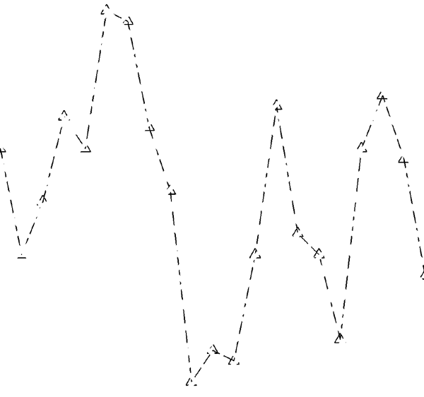

Polar Plot

A plot object creates a set of polylines connecting data points in two-dimensional space.
An IDLgrPlot object is an atomic graphic object ; it is one of the basic drawable elements of the IDL Object Graphics system, and it is not a container for other objects.
Note: See IDLgrAxis for information on configuring plot axes.
See IDLgrPlot::Init .
Objects of this class have the following properties. See IDLgrPlot Properties for details on individual properties.
|
|
|
|
|
In addition, objects of this class inherit the properties of all superclasses of this class.
This class has the following methods:
In addition, this class inherits the methods of its superclasses (if any).
Plot objects can be configured to draw regular X vs. Y , histogram, or polar plots. Set the HISTOGRAM property to create a histogram plot, or the POLAR property to create a polar plot. The following example uses the same data set to create a standard plot, a histogram plot, and a standard plot using a boxcar filter. All three plots are displayed in the same view.
mywindow = OBJ_NEW('IDLgrWindow')
myview = OBJ_NEW('IDLgrView', VIEWPLANE_RECT=[-10,-10,20,20])
mymodel = OBJ_NEW('IDLgrModel')
x = (FINDGEN(21) / 10.0 - 1.0) * 10.0
y = [3.0, -2.0, 0.5, 4.5, 3.0, 9.5, 9.0, 4.0, 1.0, -8.0, $
-6.5, -7.0, -2.0, 5.0, -1.0, -2.0, -6.0, 3.0, 5.5, 2.5, -3.0]
myplot1 = OBJ_NEW('IDLgrPlot', x, y, COLOR=[120, 120, 120])
myplot2 = OBJ_NEW('IDLgrPlot', x, y, /HISTOGRAM, LINESTYLE=4)
y2 = SMOOTH(y, 5)
myplot3 = OBJ_NEW('IDLgrPlot', x, y2, LINESTYLE=2)
myview->Add, mymodel
mymodel->Add, myplot1
mymodel->Add, myplot2
mymodel->Add, myplot3
mywindow->Draw, myview
|
|
You can control the minimum and maximum values of data plotted by a plot object. Set the MAX_VALUE property of the plot object to disregard data values higher than a specified value. Set the MIN_VALUE property to disregard data values lower than a specified value. Floating-point Not-a-Number (NaN) values are also treated as missing data and are not plotted.
For example, the following statement changes the minimum and maximum values of the histogram plot, and re-draws the view object:
myplot2->SetProperty, MAX_VALUE=8, MIN_VALUE=2
mywindow->Draw, myview
Set the SYMBOL property of a plot object equal to the object reference of a symbol object to display that symbol at each data point. For example, to use a triangle symbol at each data point, create the following symbol object, set the plot object’s SYMBOL property, and re-draw:
mySymbol = OBJ_NEW('IDLgrSymbol', 5, SIZE=[.3,.3])
myplot1->SetProperty, SYMBOL=mySymbol
mywindow->Draw, myview
|
 |
Use the NSUM property of the plot object to average the values of a group of data points before plotting. If there are m data points, m/NSUM data points are plotted. For example, the following statement causes IDL to average pairs of data points when plotting the line for the histogram plot.
myplot2->SetProperty, NSUM=2
mywindow->Draw, myview
To create a polar plot, provide a vector of radius values, a vector of theta values, and set the POLAR property to a nonzero value. The following example creates a simple polar plot:
mywindow = OBJ_NEW('IDLgrWindow')
myview = OBJ_NEW('IDLgrView', VIEWPLANE_RECT=[-100,-100,200,200])
mymodel = OBJ_NEW('IDLgrModel')
r = FINDGEN(100)
theta = r/5
mypolarplot = OBJ_NEW('IDLgrPlot', r, theta, /POLAR)
myview->Add, mymodel
mymodel->Add, mypolarplot
mywindow->Draw, myview
|
|
Date/time data usually comes from measuring data values at specific times. For example, the displacement (in inches) of an object might be recorded at every second for 37 seconds after the initial recording of 59 minutes and 30 seconds after 2 o'clock pm (fourteen hundred hours) on the 30th day of March in the year 2000 as follows:
number_samples = 37
date_time = TIMEGEN(number_samples, UNITS = 'Seconds', $
START = JULDAY(3, 30, 2000, 14, 59, 30))
displacement = SIN(10.*!DTOR*FINDGEN(number_samples))
Normally, this type of data would be imported into IDL from a data file. However, this section is designed specifically to show how to display date/time data, not how to import data from a file; therefore, the data for this example is created with the above IDL commands.
Before displaying this one-dimensional data with the IDLgrPlot object, the format of the date/time values is specified through the LABEL_DATE routine:
date_label = LABEL_DATE(DATE_FORMAT = ['%I:%S'])
where
%I
represents minutes and
%S
represents seconds.
Before applying the results from LABEL_DATE, we must first create (initialize) our display objects:
oPlotWindow = OBJ_NEW('IDLgrWindow', RETAIN = 2, $
DIMENSIONS = [800, 600])
oPlotView = OBJ_NEW('IDLgrView', /DOUBLE)
oPlotModel = OBJ_NEW('IDLgrModel')
oPlot = OBJ_NEW('IDLgrPlot', date_time, displacement, $
/DOUBLE)
The oPlotModel object will contain the IDLgrPlot and IDLgrAxis objects. The oPlotView object contains the oPlotModel object with the DOUBLE keyword. The DOUBLE keyword is set for the oPlotView and oPlot objects because the date/time data is made up of double-precision floating-point values.
Although the date/time part of the data will actually be contained and displayed through the IDLgrAxis object, the oPlot object is created first to provide a display region for the axes:
oPlot->GetProperty, XRANGE = xr, YRANGE = yr
xs = NORM_COORD(xr)
xs[0] = xs[0] - 0.5
ys = NORM_COORD(yr)
ys[0] = ys[0] - 0.5
oPlot->SetProperty, XCOORD_CONV = xs, YCOORD_CONV = ys
The NORM_COORD routine is used to create a normalized (0 to 1) display coordinate system. This coordinate system will also apply to the IDLgrAxis objects:
; X-axis title.
oTextXAxis = OBJ_NEW('IDLgrText', 'Time (seconds)')
; X-axis (date/time axis).
oPlotXAxis = OBJ_NEW('IDLgrAxis', 0, /EXACT, RANGE = xr, $
XCOORD_CONV = xs, YCOORD_CONV = ys, TITLE = oTextXAxis, $
LOCATION = [xr[0], yr[0]], TICKDIR = 0, $
TICKLEN = (0.02*(yr[1] - yr[0])), $
TICKFORMAT = ['LABEL_DATE'], TICKINTERVAL = 5, $
TICKUNITS = ['Time'])
; Y-axis title.
oTextYAxis = OBJ_NEW('IDLgrText', 'Displacement (inches)')
; Y-axis.
oPlotYAxis = OBJ_NEW('IDLgrAxis', 1, /EXACT, RANGE = yr, $
XCOORD_CONV = xs, YCOORD_CONV = ys, TITLE = oTextYAxis, $
LOCATION = [xr[0], yr[0]], TICKDIR = 0, $
TICKLEN = (0.02*(xr[1] - xr[0])))
; Plot title.
oPlotText = OBJ_NEW('IDLgrText', 'Measured Signal', $
LOCATIONS = [(xr[0] + xr[1])/2., $
(yr[1] + (0.02*(yr[0] + yr[1])))], $
XCOORD_CONV = xs, YCOORD_CONV = ys, $
ALIGNMENT = 0.5)
The TICKFORMAT, TICKINTERVAL, and TICKUNITS keywords specify the X-axis as a date/time axis.
These objects are now added to the oPlotModel object and this model is added to the oPlotView object:
oPlotModel->Add, oPlot
oPlotModel->Add, oPlotXAxis
oPlotModel->Add, oPlotYAxis
oPlotModel->Add, oPlotText
oPlotView->Add, oPlotModel
Now the oPlotView object, which contains all of these objects, can be viewed in the oPlotWindow object:
oPlotWindow->Draw, oPlotView
The Draw method to the oPlotWindow object produces the following results:
|
|
The previous display shows the progression of the date/time variable, but it does not include all of the date/time data we generated with the TIMEGEN routine. This data also includes hour, month, day, and year information. IDL can display this information with additional levels to the date/time axis. You can control the number of levels to draw and the units used at each level with the TICKUNITS keyword. You can specify the formatting for these levels by changing the DATE_FORMAT keyword setting to the LABEL_DATE routine:
date_label = LABEL_DATE(DATE_FORMAT = $
['%I:%S', '%H', '%D %M, %Y'])
where %H represents hours, %D represents days, %M represents months, and %Y represents years. Notice DATE_FORMAT is specified with a three-element vector. Date/time data can be displayed on an axis with three levels. The format of these levels are specified through this vector.
In this example, the first level (closest to the axis) will contain minute and second values separated by a colon (%I:%S). The second level (just below the first level) will contain the hour values (%H). The third level (the final level farthest from the axis) will contain the day and month values separated by a space and year value separated from the day and month values by a comma (%D %M, %Y).
Besides the above change to the LABEL_DATE routine, we must also change the settings of the IDLgrAxis properties to specify a multiple level axis:
oPlotXAxis->SetProperty, $
TICKFORMAT = ['LABEL_DATE', 'LABEL_DATE', 'LABEL_DATE'], $
TICKUNITS = ['Time', 'Hour', 'Day']
The TICKFORMAT is now set to a string array containing an element for each level of the axis. The TICKUNITS keyword is set to note the unit of each level. These property settings produce the following result:
|
|
Notice the three levels of the X-axis. These levels are arranged as specified by the previous call to the LABEL_DATE routine.
|
5.0 |
Introduced |
|
5.6 |
Added CLIP_PLANES property |
|
6.1 |
Added ALPHA_CHANNEL property |
|
6.4 |
Added SHADER property Added GetVertexAttributeData, SetVertexAttributeData methods |
| 8.0 | Added ANTIALIAS property |